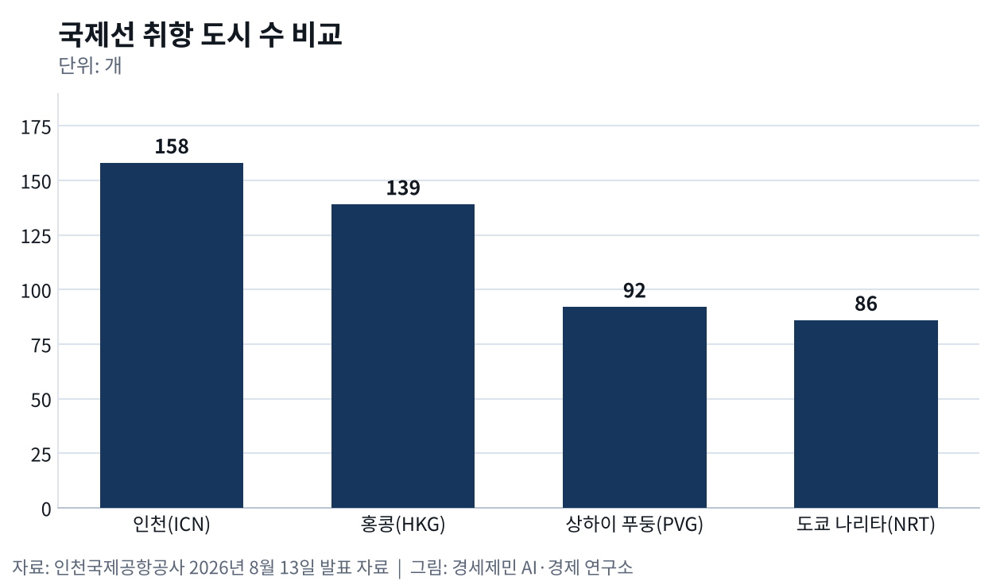

항공사만 101개 인천공항, 독점인데 경쟁하는 이유
- 매출 2조9684억원, 운항·여객·상업·임대·해외 다섯 갈래
- 국내 국제여객 78% 처리, 요금은 승인 아닌 신고
- 돈 내고 들어가는 클럽재, 국민경제 이바지하는 공익 기반시설
인천국제공항공사가 8월 13일 낸 자료를 보면 인천공항에는 101개 항공사가 53개국 183개 도시로 취항한다. 한국신용평가 평가서를 보면 이 항공사들이 항공기를 띄우며 공사에 낸 운항수익만 지난해 4735억원이다. 항공사가 실어 온 여객은 여객수익과 매장 임대 수입을 다시 만든다. 공항 살림 첫 줄을 항공사가 대는 구조다.
공사가 10월 2일 낸 자료를 보면 인천공항은 하루 전 아시아태평양항공센터(CAPA)가 주는 올해의 아시아 대형공항상을 받았다. 시상식은 일본 홋카이도 아시아 항공사 지도자 회의 자리였다. 세계 항공산업을 분석하는 CAPA는 25년 동안 쌓은 환승 연결망과 운영 역량을 선정 사유로 들었다. 국내 국제선을 독점하는 공항이 왜 항공사 유치에 매달리는지, 공항이 어떤 산업인지 네 갈래로 짚는다.
활주로 하나로 다섯 사업, 규모와 범위의 경제
활주로와 터미널과 관제와 보안은 큰 고정비다. 여객이 늘수록 한 명당 비용이 떨어지는데, 이를 규모의 경제라 부른다. 네덜란드 암스테르담자유대 연구진은 2003년 유럽 공항 자료를 분석해 공항이 여객 처리에서 규모수익 체증을 보인다고 밝혔다. 스페인 라스팔마스대 연구진은 2011년 공항 비용함수를 추정해 교통량을 여러 공항으로 나누면 전체 운영비가 늘어난다고 결론지었다.
공항은 범위의 경제도 누린다. 여러 사업을 한 기업이 맡으면 비용이 덜 든다는 뜻이다. 한국신용평가가 4월 22일 낸 평가서를 보면 공사 지난해 별도 매출은 2조9684억원이다. 운항수익과 여객수익을 더한 항공수익 1조173억원, 상업수익 1조5137억원, 임대·유틸리티 수익 3635억원, 해외사업 수익 664억원이다. 한 공항에서 다섯 갈래 수입이 나온 셈이다.
101개 항공사 158개 도시, 항공사가 부르는 여객

항공운송은 통신이나 철도처럼 연결망으로 서비스를 파는 네트워크 산업이다. 공항은 연결망 거점이고 노선은 거점과 거점을 잇는다. 공사가 같은 자료에서 경쟁 공항과 견준 여객 국제선 취항 도시는 158개다. 이는 홍콩 139개, 상하이 푸둥 92개, 도쿄 나리타 86개보다 많다. 취항 도시가 많을수록 여객이 갈아탈 길도 많아진다.
네트워크 산업에서는 참여자가 늘수록 서로 얻는 가치가 커진다. 미국 경제학자 두 사람은 1985년 논문에서 이를 네트워크 외부성으로 정리했다. 공항에서는 항공사가 늘면 노선이 늘고, 노선이 늘면 여객이 몰리고, 여객이 몰리면 항공사가 다시 들어온다. 연결망이 클수록 새 참여자가 붙기 쉬워진다. 이 고리 첫 마디를 쥔 쪽이 노선을 정하는 항공사다.
여객은 공항을 보고 오지 않고 노선을 보고 온다. 그 노선을 까는 것은 항공사다. 항공사가 떠나면 노선이 끊기고, 노선이 끊기면 여객도 떠난다. 그래서 공항이 먼저 붙잡아야 할 고객은 항공사이고, 공항끼리 벌이는 경쟁은 항공사 유치 경쟁이다. 공사가 미주와 유럽과 인도 중장거리 노선에서 신규 취항 항공사 유치를 넓히겠다고 한 것도 같은 이치다.
국제선 78% 독점, 노선망으로 겨루는 이웃 허브
한 지역 수요를 공항 하나가 처리하는 편이 둘로 나눠 처리하는 것보다 싸면 그 산업은 자연독점이다. 한국신용평가는 인천공항이 지난해 국내 국제여객 78%를 처리했다고 적었다. 공사가 이 공항을 독점 운영하고, 공사법 등 관련 법령이 그 운영권을 보장한다고도 평가했다. 국내 국제선 승객 10명 가운데 8명꼴이 인천을 쓰는 셈이다.
독점은 규제를 부른다. 공항시설법 제32조는 공항 사용료를 정하거나 바꿀 때 국토교통부장관에게 신고하게 하고, 지방자치단체와 공공기관이 아닌 운영자는 승인을 받게 한다. 한국신용평가 평가서를 보면 공사는 정부가 전액 출자해 세웠고 공공기관운영법을 적용받는다. 그래서 요금은 승인이 아니라 신고로 정하되, 정부 직접 통제를 받는다.

영국 대표 교통경제학자는 2002년 논문에서 다른 길을 제시했다. 공항 시장지배력은 자연독점보다 경쟁할 용지를 얻기 어려운 데서 나온다고 봤고, 일반 경쟁법에 따른 사후 규제로 충분할 수 있다고 했다. 공항 산업이 지닌 독특한 성격 때문에 공항이 시장지배력을 함부로 쓰지 않는다고도 봤다. 독점이 곧 경쟁 면제는 아니라는 시각이다.
권역 안 여객은 다른 공항을 고르기 어렵지만, 항공사는 어느 나라 허브에 노선을 깔지 고른다. 다른 나라로 가는 연결편을 갈아탈 여객도 어느 허브를 거칠지 고른다. 항공사가 노선을 옮기면 독점 공항이라도 연결망이 줄어든다. 독점 공항도 항공사에 선택받아야 산다. 그래서 인천은 안에서는 독점이고 밖에서는 이웃 나라 허브와 노선망으로 겨룬다.
공공재 아닌 클럽재, 사용료로 다 못 걷는 편익
경제학은 돈을 안 낸 사람을 막을 수 없고 함께 써도 줄지 않는 국방이나 등대 같은 재화를 공공재라 부른다. 공항 출국장은 항공권을 사고 보안검색을 통과해야 들어가고, 붐비면 활주로 슬롯과 탑승구를 놓고 다툰다. 회원만 쓰되 정원 안에서는 함께 써도 손해가 적은 클럽재에 가깝다. 클럽재 이론은 회원 수와 시설 규모를 함께 정해야 한다고 본다.
그렇다고 이윤만 좇는 기업도 아니다. 공사 설립 근거인 인천국제공항공사법 제1조는 세계적인 공항전문기업으로 키우는 것과 함께 원활한 항공 운송과 국민경제발전에 이바지하는 것을 설립 목적으로 정했다. 관광과 수출과 배후산업이 공항 덕을 보지만 그 편익이 사용료로 다 걷히지는 않는다. 공항이 외부효과가 큰 사회간접자본인 까닭이다.
※ 이 기사는 AI 프로그램 클로드를 활용해 작성했습니다.
이 기사는 인공지능을 활용해 작성했습니다. 사실관계는 저자가 확인했습니다.
참고문헌
기관 자료와 법령
- 인천국제공항공사, "인천공항, 개항이후 처음으로 상반기 국제여객 세계 1위 달성", 2026년 8월 13일. https://www.airport.kr/bbs/co_ko/84/139530/artclView.do
- 인천국제공항공사, "인천공항, CAPA 선정 '올해의 아시아 대형공항'", 2026년 10월 2일. https://www.airport.kr/bbs/co_ko/84/139610/artclView.do
- 한국신용평가, 「KIS Credit Opinion 인천국제공항공사」, 평가일 2026년 4월 22일. https://m.kisrating.com/fileDown.do?menuCd=R8&gubun=2&fileName=rs20260422-19.pdf
- 공항시설법 제32조(사용료의 징수 등), 법률 제21037호, 시행 2026년 2월 27일. 국가법령정보센터. https://www.law.go.kr/법령/공항시설법
- 인천국제공항공사법 제1조(목적), 법률 제20297호, 시행 2024년 8월 14일. 국가법령정보센터. https://www.law.go.kr/법령/인천국제공항공사법
연구 논문
- Samuelson, P. A., "The Pure Theory of Public Expenditure", 『The Review of Economics and Statistics』 36(4), 1954년, pp.387-389. https://doi.org/10.2307/1925895
- Buchanan, J. M., "An Economic Theory of Clubs", 『Economica』 32(125), 1965년, pp.1-14. https://doi.org/10.2307/2552442
- Katz, M. L., & Shapiro, C., "Network Externalities, Competition, and Compatibility", 『American Economic Review』 75(3), 1985년, pp.424-440. https://ideas.repec.org/a/aea/aecrev/v75y1985i3p424-40.html
- Starkie, D., "Airport regulation and competition", 『Journal of Air Transport Management』 8(1), 2002년, pp.63-72. https://doi.org/10.1016/S0969-6997(01)00015-1
- Pels, E., Nijkamp, P., & Rietveld, P., "Inefficiencies and scale economies of European airport operations", 『Transportation Research Part E』 39(5), 2003년, pp.341-361. https://doi.org/10.1016/S1366-5545(03)00016-4
- Martín, J. C., & Voltes-Dorta, A., "The dilemma between capacity expansions and multi-airport systems: Empirical evidence from the industry's cost function", 『Transportation Research Part E』 47(3), 2011년, pp.382-389. https://doi.org/10.1016/j.tre.2010.11.009